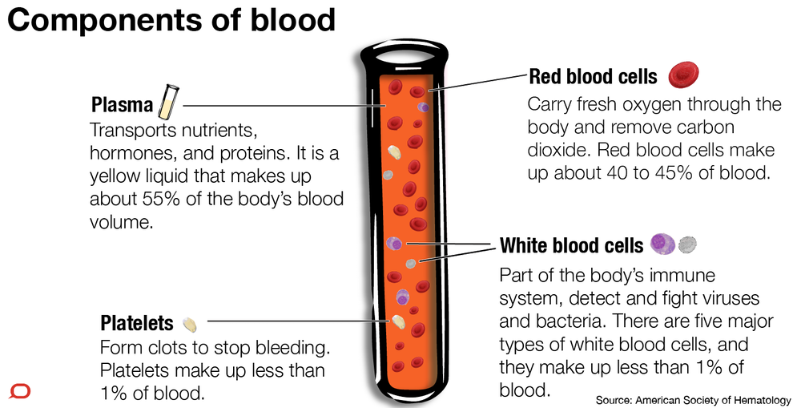

Why You Should Donate Blood
1.Blood Need And Blood Supply
Every two seconds someone needs blood. It is essential for surgeries, cancer treatment, chronic illnesses, and traumatic injuries. Whether a patient receives whole blood, red cells, platelets or plasma, this lifesaving care starts with one person making a generous donation.
1 Donation can save up to 3 lives
Every 2 seconds someone needs blood
More than 38,000 blood donations are needed every day.
Blood platelets cannot be manufactured they can only come from volunteer donors
A total of 30 million blood components are transfused each year.
Platelets, critical for cancer must be transfused every 5 days
One can donate whole blood once every 56 days. Platelet donors can give every 7 days
A single car accident victim can require as many as 100 units of blood.
2.Benefits Of Blood Donation
It turns out that donating blood doesn’t just benefit recipients. There are health benefits for donors, too, on top of the benefits that come from helping others. Read on to learn the health benefits of donating blood and the reasons behind them.
Donating blood has benefits for your emotional and physical health. According to a report by the Mental Health Foundation, helping others can:
Reduce stress
Improve your emotional well-being
Benefit your physical health
Help get rid of negative feelings
Provide a sense of belonging and reduce isolation
Research has found further evidence of the health benefits that come specifically from donating blood.
3.Free health checkup
In order to give blood, you’re required to undergo a health screening. A trained staff member performs this checkup. They’ll check your:
Pulse
Blood pressure
Body temperature
Hemoglobin levels
Your blood is also tested for several diseases. These include:
4.Facts About Blood Donation
Blood Need
Every year our nation requires about 5 Crore units of blood, out of which only a meager 2.5 Crore units of blood are available.
The average red blood cell transfusion is approximately 3 pints
Sickle cell patients can require frequent blood transfusions throughout their lives.
More than 1 million new people are diagnosed with cancer each year. Many of them will need blood, sometimes daily, during their chemotherapy treatment.
Blood Supply
Blood cannot be manufactured – it can only come from generous donors.
Type O-negative blood (red cells) can be transfused to patients of all blood types. It is always in great demand and often in short supply.
Type AB-positive plasma can be transfused to patients of all other blood types. AB plasma is also usually in short supply.
Donation
Donating blood is a safe process. A sterile needle is used only once for each donor and then discarded.
Blood donation is a simple four-step process: registration, medical history and mini-physical, donation and refreshments.
Every blood donor is given a mini-physical, checking the donor's temperature, blood pressure, pulse and hemoglobin to ensure it is safe for the donor to give blood.
The actual blood donation typically takes less than 10-12 minutes. The entire process, from the time you arrive to the time you leave, takes about an hour and 15 min.
The average adult has about 10 units of blood in his body. Roughly 1 unit is given during a donation.
A healthy donor may donate red blood cells every 56 days, or double red cells every 112 days.
A healthy donor may donate platelets as few as 7 days apart, but a maximum of 24 times a year.
All donated blood is tested for HIV, hepatitis B and C, syphilis and other infectious diseases before it can be transfused to patients.
Donors
The number one reason donors say they give blood is because they "want to help others."
Two most common reasons cited by people who don't give blood are: "Never thought about it" and "I don't like needles."
One donation can help save the lives of up to three people.
If you began donating blood at age 18 and donated every 90 days until you reached 60, you would have donated 30 gallons of blood, potentially helping save more than 500 lives!
Only 7 percent of people in India have O-negative blood type. O-negative blood type donors are universal donors as their blood can be given to people of all blood types.
Type O-negative blood is needed in emergencies before the patient's blood type is known and with newborns who need blood.
Thirty-five percent of people have Type O (positive or negative) blood.
0.4 percent of people have AB-blood type. AB-type blood donors are universal donors of plasma, which is often used in emergencies, for newborns and for patients requiring massive transfusions.
Blood Components
Blood makes up about 7 percent of your body's weight.
There are four types of transfusable products that can be derived from blood: red cells, platelets, plasma and cryoprecipitate. Typically, two or three of these are produced from a unit of donated whole blood – hence each donation can help save up to three lives.
Donors can give either whole blood or specific blood components only. The process of donating specific blood components – red cells, plasma or platelets – is called apheresis.
One transfusion dose of platelets can be obtained through one apheresis donation of platelets or by combining the platelets derived from five whole blood donations.
Donated platelets must be used within five days of collection.
Healthy bone marrow makes a constant supply of red cells, plasma and platelets. The body will replenish the elements given during a blood donation – some in a matter of hours and others in a matter of weeks.
Does Donating blood lower risk of your heart disease
The research is mixed on wheather blood donation actually lowers the risk of heart disease and heart attack.
A 2017 studyTrusted Source suggests that regular blood donations are associated with increased risk of heart disease possibly due to unfavorable cholesterol levels
However, donating blood regularly may lower iron stores, according to a 2013 studyTrusted Source. This may reduce the risk of heart attack. High body iron stores are believed to increase the risk of heart attack.